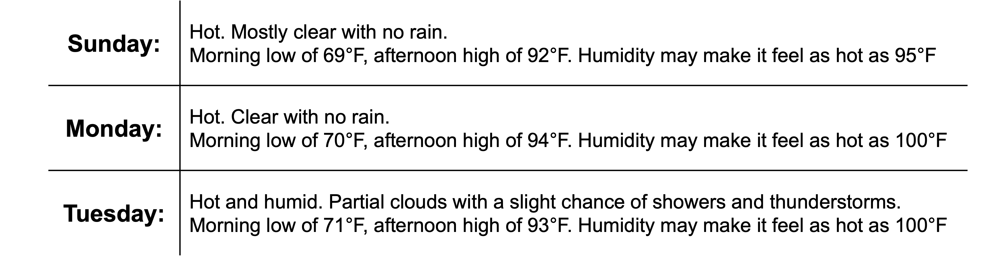
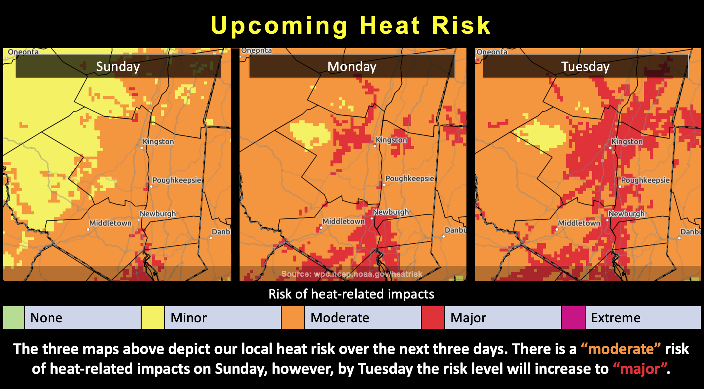
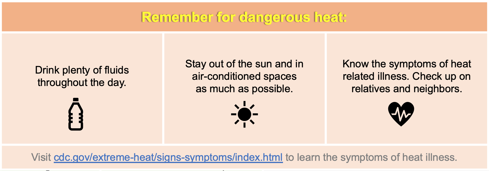

Warning: this is an old update that has been archived. This update is not current.
The heat persists.
School Forecast
through Friday July 12th
Last updated: 8:00PM Saturday July 6, 2024
| 0% (Nope) |
|---|
| 0% (Nope) |
|---|
| 0% (Nope) |
|---|
___________________
8:00PM Saturday:
Today's recap:
Today was a hot, muggy day. As forecasted yesterday, rain moved across New York early this
morning. NYSMesonet stations in the mid-Hudson Valley recorded 0.33 inches to 0.84 inches between 5AM and 8AM. Clouds associated with the morning batch of rain
cleared out faster than anticipated. This allowed for ample sunshine throughout the day which boosted temperatures slightly higher than initially anticipated.
Nearly every NYSMesonet station in the Hudson Valley from Lake Champlain to New York City recorded
maximum temperatures between 89 and 91. This combined with dewpoints in the mid-70s to produce heat indexes as high as the lower 100s across eastern New York. The concern for strong
thunderstorms noted in yesterday's forecast also verified today. Storms this morning and scattered thunderstorms this afternoon intensified quite a bit. The National Weather Service
in Albany shared 12 Special Weather Statements on their Twitter today. These statements highlighted individual storms that had
the potential to produce strong winds or hail. The Storm Prediction Center also upgraded our region to a marginal
risk of severe weather today and noted the potential for supercells in their discussion. Turning our
attention ahead to the upcoming work week, the stormy weather will pause for a few days while the July heat persists.
The Forecast:

As of 8PM, much of the thunderstorm activity has shifted east of our region and current satellite reveals mostly clear skies. Weather Prediction Center analysis currently identifies a 1017 high pressure area over the midwest. The high pressure system will shift eastward and be directly over New York Sunday into Monday as depicted by both the 18z NAM and HRRR. This will suppress cloud cover for the next two days and result in drier weather without rain. Thanks in part to ample sunshine, temperatures will remain hot reaching the low to mid 90s Sunday, Monday, and Tuesday afternoons - about 10 degrees above normal for early July. Latest GEFS members all have Poughkeepsie in the 91F - 94F range both Sunday and Monday, which is in line with deterministic output from the 18z HRRR. For the overnights, GEFS members drop temperatures back to the mid-60s while EPS members average out around 70 and NAM/HRRR suggest temperatures may struggle to even fall to 70 the next few nights. Normal daily low temperatures for early July are in the low 60s. While the "cold" front that moved through today won't actually affect our temperatures much, it will usher in drier air behind it. Dewpoints tomorrow look to be limited to the mid-60s, opposed to today's mid-70s. This will allow Sunday and Monday to feel less muggy, though heat indexes may still reach the mid-90s on Sunday and approach 100 on Monday. Increased moisture will seep into the region Tuesday as the high pressure area shifts to our east. Dewpoints will again reach the mid-70s. This increased moisture will again allow heat indexes to approach and potentially exceed 100 on Tuesday. It will also reintroduce the potential for isolated showers and storms on Tuesday.
The Impacts:
weather impacts will stem from heat.
Dangerous heat.
Warm temperatures will produce uncomfortable heat on Sunday. As moisture in the atmosphere increases Monday into Tuesday, temperatures may become dangerous as heat indexes approach 100 degrees. At this time there are no heat advisories in effect from the National Weather Service; however, this could change over the next day or two if confidence in excessive heat increases. 
The latest National Weather Service HeatRisk index currently depicts our area experiencing moderate heat risk on Sunday, increasing to major heat risk on Tuesday. The index factors in how unusual the heat is for the time of year, its duration and intensity, and its potential impact on human health. Moderate risk means that individuals sensitive to heat are likely to be impacted, especially those without effective cooling and/or adequate hydration. Major heat impact means that heat affects anyone without effective cooling and/or adequate hydration.
For the latest official weather forecast and heat advisories, monitor the National Weather Service at weather.gov/aly. Stay hydrated and stay cool as this July continues to heat up!
Next Update:
On Monday
-Ethan
KingstonSnows | Kingston, New York
Website built by Ethan Burwell